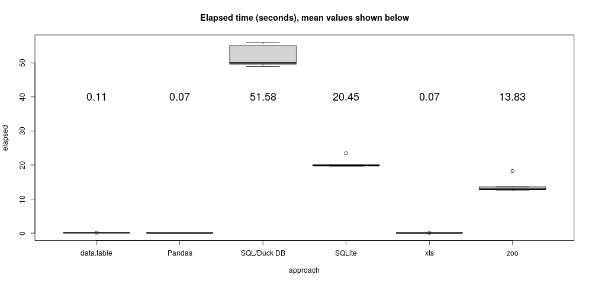

Column-oriented tabular data model (unlike SQLite, like R!)
Very impressive R and Python integration
"Hello world" SQL trivial example
library(duckdb)
data("flights", package = "nycflights13")
con <- dbConnect(duckdb())
duckdb_register(con, "flights", flights)
dbGetQuery(con, "SELECT origin, COUNT(*) AS n FROM flights GROUP BY origin")
origin n
1 EWR 120835
2 LGA 104662
3 JFK 111279
OK, how about just a simple example then?
Name the top 3 destinations for each origin airport. Easy!
One base R way
Map(function(x) head(names(sort(table(x), decreasing = TRUE)), n = 3),
split(flights[["dest"]], flights[["origin"]]))
$EWR
[1] "ORD" "BOS" "SFO"
$JFK
[1] "LAX" "SFO" "BOS"
$LGA
[1] "ATL" "ORD" "CLT"
SQL (and DuckDB) (Yikes!)
Q = "
SELECT origin, dest
FROM (SELECT origin, dest, n
FROM (SELECT origin, dest, n, RANK() OVER (PARTITION BY origin ORDER BY n DESC) AS h
FROM (SELECT origin, dest, COUNT(*) AS n
FROM flights
GROUP BY origin, dest
) AS curly
) AS moe
WHERE (h <= 3)
) AS shemp ORDER BY origin;"
dbGetQuery(con, Q)
Fortunately, DuckDB works with dplyr!
tbl(con, "flights") %>%
group_by(origin) %>%
count(dest, sort = TRUE) %>%
slice_max(order_by = n, n = 3) %>%
select(origin, dest)
origin dest
1 JFK LAX
2 JFK SFO
3 JFK BOS
4 LGA ATL
5 LGA ORD
6 LGA CLT
7 EWR ORD
8 EWR BOS
9 EWR SFO
When and how is a tool like DuckDB really useful?
At least two facets to this, syntax and performance.
Syntax and comprehensibility advice
SQL is good for simple data processing tasks.
It can be awful or even unusable for many other tasks we use R for.
Start with base R or dplyr. Think about problems the dplyr way.
Dplyr works with your database anyway, so you'll have less to think about.
Another syntax example, "as of" join one liners
In R and Python...
data[calendar, on = "date", roll = TRUE] # using R data.table
pandas.merge_asof(calendar, data, on = "date") # using Python Pandas
merge(calendar, na.locf(merge(calendar, data)), join = "left") # R xts
In SQL (not a one-liner!)
WITH z AS (
SELECT date, (NULL) AS value FROM calendar
UNION
SELECT date, value FROM data
ORDER BY date
),
a AS (
SELECT date, value, ROW_NUMBER() OVER (
ORDER BY date
RANGE BETWEEN UNBOUNDED PRECEDING AND CURRENT ROW
) * (CASE WHEN value IS NULL THEN 0 ELSE 1 END) AS i
FROM z
),
b AS (
SELECT date, MAX(i) OVER (
ORDER BY date
RANGE BETWEEN UNBOUNDED PRECEDING AND CURRENT ROW
) AS j
FROM a
),
c AS (
SELECT b.date, value FROM a, b
WHERE a.i > 0 AND a.i = b.j
),
d AS (
SELECT calendar.date, value FROM calendar, c
WHERE calendar.date = c.date
ORDER BY c.date
)
SELECT * FROM d UNION SELECT * FROM d ORDER BY date
Performance of that "as of" join on my laptop

Performance advice
In many tests, R outperforms DuckDB for in-memory problems across the board (sometimes by huge margins).
DuckDB's advantage is that it can work without modification on larger-than-main-memory data.
Use things like DuckDB (or SQLite) when you expect problems that don't easily fit in RAM.
And when you do, use them with dplyr!
Summary
DuckDB makes using a database in R *really* easy.
DuckDB's key advantage is that it can work without modification on larger-than-main-memory data.